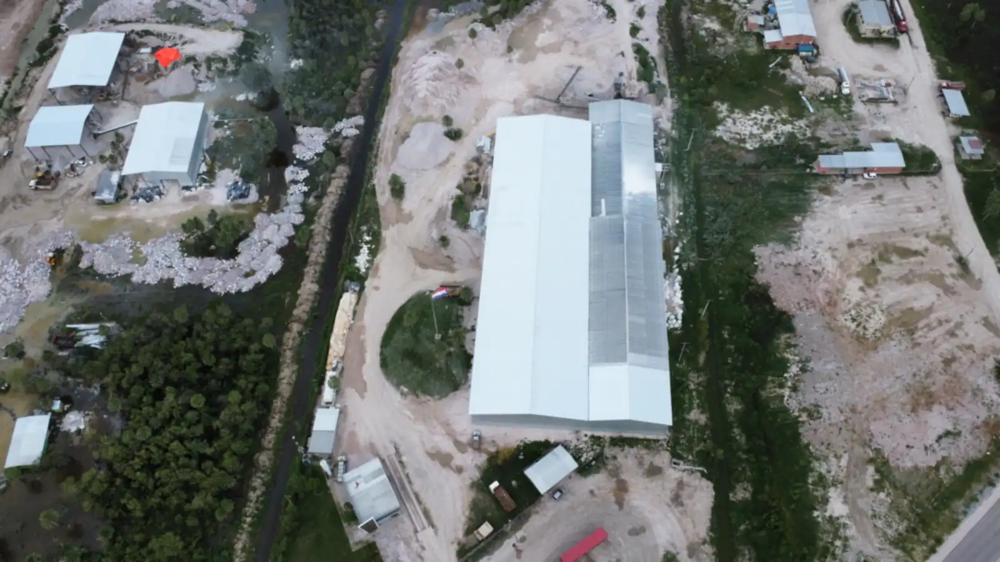

Steel frame en el mundo
El light steel frame —perfiles de acero galvanizado conformados en frío— nació en Estados Unidos hace casi un siglo. Hoy estructura hoteles, hospitales, escuelas y viviendas en América del Norte, Japón, Australia y Europa. Esta es su historia, en datos y con fuentes.
Primer edificio documentado con estructura de acero conformado en frío, en Lynchburg (EE.UU.). [1]
Primera norma de cálculo para perfiles livianos de acero, publicada por el AISI en EE.UU. [1]
de los edificios no residenciales de EE.UU. usan perfiles de acero conformado en frío. [1]
reciclable: los perfiles nuevos ya llevan entre 30 y 40 % de acero reciclado. [7]
Qué es el light steel frame
Es un sistema estructural de perfiles de acero galvanizado de 0,8 a 2,3 mm de espesor, conformados en frío. [8] Montantes, soleras y vigas forman paneles de pared, entrepisos y cubiertas, que se cierran con placas cementicias, de yeso u OSB y llevan aislación térmica y acústica en su interior.
En Estados Unidos se lo llama cold-formed steel framing (CFS). Es construcción en seco: sin fraguado ni escombros, con piezas que llegan cortadas y numeradas desde la fábrica. Por eso la obra es más rápida y más previsible.
Un siglo de acero liviano
- c. 1925
Virginia Baptist Hospital, en Lynchburg (EE.UU.): primer uso documentado del acero conformado en frío en un edificio, con vigas de perfiles C dobles. En una renovación reciente, seguían soportando las cargas. [1]
- 1933
En la Exposición Universal de Chicago, «A Century of Progress», tres casas con estructura de acero —General Houses, Armco-Ferro y Stran-Steel— se presentan como la vivienda del futuro. [1]
- 1939
El American Iron and Steel Institute (AISI) financia una investigación en la Universidad Cornell para entender cómo trabaja el acero de chapa fina. [1]
- 1946
El AISI publica la primera especificación para el cálculo de perfiles livianos de acero. Desde entonces, el sistema se dimensiona con norma. [1]
- 1948–1950
Lustron fabrica en serie 2.498 casas de acero. Quiebra en 1950 con más de 8.000 pedidos sin entregar: había demanda, faltó escala industrial. Cerca de 1.500 siguen en pie. [5]
- Años 50
Los tornillos autoperforantes reemplazan a los perfiles «clavables» y llegan las atornilladoras: el montaje se vuelve rápido y preciso. [1]
- Años 60
Con los edificios en altura, el acero liviano entra en muros cortina, fachadas con ladrillo visto y paredes de shafts: es liviano y no combustible. [1]
- 1994
Tras años de precios altos e inestables de la madera, un estudio para el Departamento de Vivienda de EE.UU. (HUD) compara obras reales: las paredes de acero cuestan apenas 7 % más que las de madera, por una mano de obra todavía poco entrenada. [4]
- 1995
Terremoto de Hanshin-Awaji (Kobe, Japón): de unas 50.000 viviendas temporales, cerca de 3.000 se levantan con steel frame importado. En 1996, seis siderúrgicas japonesas crean un comité para desarrollar el sistema. [6]
- 2004
El 81 % de las paredes interiores construidas en EE.UU. ya usa perfiles de acero. [1]
- 2005
Brasil publica la norma ABNT NBR 15253 para perfiles de light steel framing. El sistema había llegado al país a comienzos de los años 90. [8]
- 2011
Hacia 2011, el tonelaje de montantes estructurales supera en EE.UU. al de no estructurales: el acero liviano deja de ser solo tabique y pasa a sostener edificios. [1]
- 2016
Duosteel empieza a proyectar, fabricar y montar estructuras en acero en Paraguay y Brasil, combinando acero pesado y light steel frame.
- 2025
Unas 5.000 casas unifamiliares terminadas en EE.UU. tienen estructura de acero: 25 % más que en 2024. [2]
Donde el sistema se hizo industria
En EE.UU. el acero conformado en frío es, sobre todo, un sistema de obra comercial: entre el 30 y el 35 % de los edificios no residenciales lo usan en su estructura o en sus cerramientos. [1] Es habitual en hoteles, edificios de departamentos de media altura, escuelas, hospitales y comercios.
El mercado maduró con normas propias y fabricación industrial. Hoy, los montantes de alta resistencia (con acero de mayor límite de fluencia y nervaduras de rigidez) son el 90 % de los que se usan en el país, y resuelven la misma carga con chapa más fina. [1]
En la vivienda unifamiliar, en cambio, manda la madera: en 2025, el 94 % de las casas terminadas fue de madera y el 0,5 % de acero, unas 5.000, un 25 % más que el año anterior. [2] En Paraguay y Brasil la comparación es otra: aquí el steel frame no compite con la madera, sino con la mampostería y el hormigón, y ahí cuentan el plazo corto y la obra seca.
Cómo lo usan otros países
Japón
Tras el terremoto de Kobe, las siderúrgicas desarrollaron el sistema y lo incorporaron a la Ley de Normas de Edificación a comienzos de los años 2000. Hasta 2005 se construyeron 2.157 edificaciones, con unas 20.000 unidades. Un edificio de departamentos de tres pisos en steel frame pesa cerca de 100 kg/m²; uno de hormigón armado, cerca de 1 t/m². [6]
Australia
Usa estructuras de acero liviano en viviendas desde los años 40. Son especialmente populares en zonas con alto riesgo de termitas, aunque la casa sigue necesitando protección contra ellas. [7]
Europa y Nueva Zelanda
Junto con EE.UU., Japón y Australia, son los mercados donde el sistema está más difundido, según el Inmetro brasileño. [8]
Brasil
El light steel frame llegó a comienzos de los años 90 y tiene norma propia desde 2005. En 2010 representaba cerca del 1 % del mercado de la construcción: un sistema todavía nuevo frente a la mampostería. [8]
Paraguay
Duosteel combina light steel frame y acero pesado en obras paraguayas, como Carlão Autorepuestos en Ciudad del Este, y lo aplica en Brasil en casas y locales comerciales.
Un material que vuelve al ciclo
del acero es reciclable
del acero ya se recicla
de acero reciclado en los perfiles nuevos
menos energía para reciclar acero que para producirlo de cero
Fuente: Gobierno de Australia, Your Home. [7]
Light steel frame en obras de Duosteel


Fuentes
- Steel Framing Industry Association (SFIA) — History of cold-formed steel
- NAHB, Eye on Housing — Wood Framing Continues to Dominate Single-Family Construction (2026, U.S. Census Bureau data)
- BuildSteel.org — Cold-Formed Steel Framing Advances Mid-Rise Hotel Construction (Element Hotel, Richmond)
- HUD / NAHB Research Center — Alternative Framing Materials in Residential Construction: Three Case Studies (1994)
- Wikipedia — Lustron house
- Nippon Steel Technical Report No. 97 (2008) — Light-gauge steel-framed houses in Japan
- Australian Government, Your Home — Lightweight framing
- Inmetro — Análise de impacto regulatório: perfis de aço formados a frio para light steel framing (2011)
Datos consultados en noviembre de 2026.
